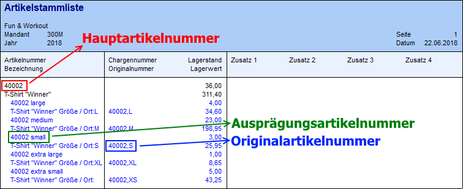
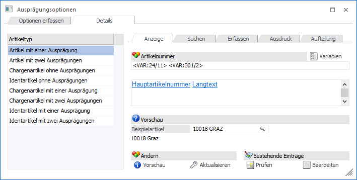
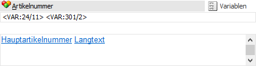
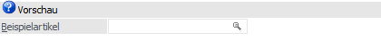
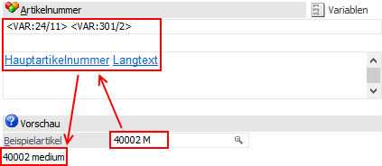
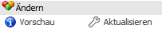
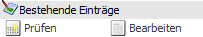

In dem Unterregister "Anzeige" kann pro Artikeltyp die Ausprägungsartikelnummer definiert werden.
Hinweis
Es handelt sich bei der sogenannten "Ausprägungsartikelnummer" um eine Artikelnummer, welche für die Darstellung von Ausprägungen in der gesamten WinLine genutzt wird. Hierüber ist es möglich die Artikelnummer einer Ausprägung "sprechend" zu gestalten und somit die Ausprägungsauswahl zu erleichtern.
Beispiel
Bei dem Artikel "40002" handelt es sich um einen Hauptartikel mit Ausprägungen (Unisex - Größe). Die Originalartikelnummer solch einer Ausprägung (z.B. Größe "S") lautet "40002,S" und die Ausprägungsartikelnummer "40002 small".


Ausprägungsartikelnummer

Ø Artikelnummer
An dieser Stelle kann die Ausprägungsartikelnummer definiert werden, wobei dieses über 2 Bereiche vorgenommen werden kann.
ü Variablenbereich (obere
Bereich)
In dem Variablenbereich kann die Ausprägungsartikelnummer über den
Button "Variablen" und / oder durch manuelle Eingaben definiert werden. Dabei
werden die zugeordneten Variablen im RTF-Bereich als "Klartext"
angezeigt.
ü RTF-Bereich (untere Bereich)
In
dem RTF-Bereich kann die Ausprägungsartikelnummer nur über den Button
"Variablen" definiert werden, wobei die Variablen immer als "Klartext" angezeigt
werden. Ein Löschen von Variablen ist per rechter Maustaste möglich und Ersetzen
/ Austauschen per linker Maustaste.
Hinweis
Das Einfügen zusätzlicher Zeichen (z.B. Leerzeichen) muss immer über den Variablenbereich erfolgen.
Ø Variablen
Durch die Anwahl des Buttons "Variablen" wird das Fenster "Variablen Einfügen" geöffnet, in welchem Variablen für die Erzeugung der Ausprägungsartikelnummer ausgewählt werden können. Diese Variablen werden dann in dem Variablenbereich bzw. dem RTF-Bereich dargestellt.
Vorschau

Ø Beispielartikel
Durch die Eingabe eines Beispielartikels kann vor der Änderung die endgültige Ausprägungsartikelnummer kontrolliert werden, wobei sich dieses ständig aktualisiert.
Hinweis
Es können nur Ausprägungen des entsprechenden Artikeltyps eingetragen werden.
Beispiel
Durch die Hinterlegung der Variablen <VAR:24/11> (Hauptartikelnummer) und <VAR:301/2> (Langtext der Ausprägung 1) würde die Ausprägungsartikelnummer "40002,M" auf "40002 medium" geändert werden.

Ändern

Ø Vorschau
Über den Button "Vorschau" wird am Bildschirm eine Vorschau über die neue Ausprägungsartikelnummer ausgegeben, wobei nur der aktuelle Artikeltyp berücksichtigt wird. Sollte es zu doppelten Ausprägungsartikelnummern kommen, dann wird auf dieses innerhalb der Liste hingewiesen.
Hinweis
Vor Erstellung der Vorschau wird abgefragt, wie viele Zeilen in der Liste (pro Artikeltyp) ausgegeben werden sollen.

Beispiel ohne doppelte Ausprägungsartikelnummern

Beispiel mit doppelten Ausprägungsartikelnummern

Ø Aktualisieren
Durch Anwahl des Buttons "Aktualisieren" wird die Ausprägungsartikelnummer des aktuellen Artikeltyps erzeugt.
Hinweis
Wenn der Button "Prüflauf" aktiviert ist, dann erfolgt vor der Erzeugung der Ausprägungsartikelnummer ein Prüflauf, ob z.B. durch manuelle Eingaben oder ungünstige Datenkonstellationen doppelte Nummern erzeugt werden würden.

ü Ja
Die Aktualisierung wird
durchgeführt, wobei auch doppelte Ausprägungsartikelnummern erzeugt werden.
Achtung
Doppelte Nummern sollten umgehend bereinigt werden (siehe Registerbutton "Bearbeiten"), da sonst z.B. eine korrekte Artikelauswahl per Autovervollständigung nicht möglich ist.
ü Nein
Die Aktualisierung wird
nicht durchgeführt.
ü Bearbeiten
Es wird das Programm
Ausprägungsnummer bearbeiten
geöffnet und die Artikel mit doppelter Ausprägungsartikelnummer angezeigt (die
Option "nur doppelte anzeigen" ist automatisch aktiviert).
Bestehende Einträge

Ø Prüfen
Bei Anwahl des Buttons "Prüfen" werden die bestehenden Ausprägungsartikelnummern des aktuellen Artikeltyps auf doppelte Einträge kontrolliert.
Hinweis
Sollten doppelte Einträge gefunden werden, dann kann direkt in das Programm Ausprägungsnummer bearbeiten gewechselt werden.
Ø Bearbeiten
Durch Anwahl des Buttons "Bearbeiten" wird das Programm Ausprägungsnummer bearbeiten geöffnet, in welchem die Ausprägungsartikelnummern des aktuellen Artikeltyps geändert werden können.